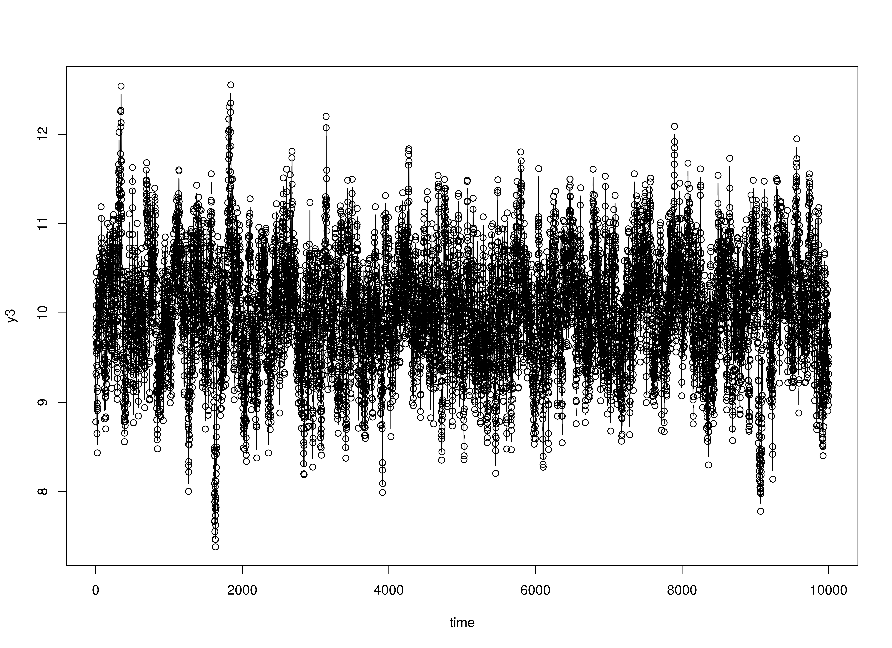
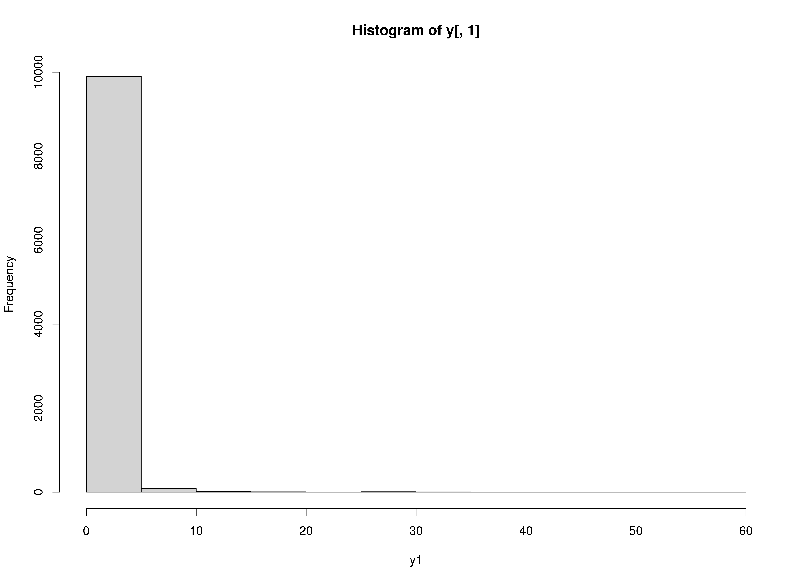

simAutoReg: Vector Autoregressive Model - VAR(p)
Ivan Jacob Agaloos Pesigan
Source:vignettes/var.Rmd
var.RmdData Generation
Normal
library(simAutoReg)
set.seed(42)
time <- 10000L
burn_in <- 200
k <- 3
p <- 2
constant <- c(1, 1, 1)
coef <- matrix(
data = c(
0.4, 0.0, 0.0, 0.1, 0.0, 0.0,
0.0, 0.5, 0.0, 0.0, 0.2, 0.0,
0.0, 0.0, 0.6, 0.0, 0.0, 0.3
),
nrow = k,
byrow = TRUE
)
chol_cov <- chol(
matrix(
data = c(
0.1, 0.0, 0.0,
0.0, 0.1, 0.0,
0.0, 0.0, 0.1
),
nrow = k,
byrow = TRUE
)
)
y <- SimVAR(
time = time,
burn_in = burn_in,
constant = constant,
coef = coef,
chol_cov = chol_cov
)Model Fitting
FitVAROLS
yx <- YX(data = y, p = p)
simAutoReg:::.FitVAROLS(Y = yx$Y, X = yx$X)
#> [,1] [,2] [,3] [,4] [,5] [,6]
#> [1,] 1.0811778 0.38149582 0.014493688 -0.008235351 0.107271863 -0.01481861
#> [2,] 0.9079932 -0.01067206 0.516880335 -0.003886862 0.009852424 0.20816148
#> [3,] 1.0180537 -0.01619283 0.008703253 0.599960140 0.015098029 -0.01696596
#> [,7]
#> [1,] 0.002528288
#> [2,] 0.005060958
#> [3,] 0.301688940


Zero-inflated Poisson Y1
y <- SimVARZIP(
time = time,
burn_in = burn_in,
constant = constant,
coef = coef,
chol_cov = chol_cov
)Model Fitting
FitVAROLS
yx <- YX(data = y, p = p)
simAutoReg:::.FitVAROLS(Y = yx$Y, X = yx$X)
#> [,1] [,2] [,3] [,4] [,5] [,6]
#> [1,] 0.1976662 0.0115907232 0.009087347 0.10811177 0.0014431850 -0.023903648
#> [2,] 0.9693473 0.0015885479 0.508317060 0.01357022 -0.0003888942 0.188067275
#> [3,] 0.9858479 -0.0004950656 0.009888306 0.62605825 -0.0006047023 -0.009607953
#> [,7]
#> [1,] -0.045984398
#> [2,] -0.009418071
#> [3,] 0.275557440Plots



hist(y[, 1], xlab = "y1")
hist(y[, 2], xlab = "y2")
hist(y[, 3], xlab = "y3")
R Core Team. (2023). R: A language and environment for
statistical computing. R Foundation for Statistical Computing. https://www.R-project.org/